Handmade Objects
Victorian Nailsea Glass Rolling Pin, Cobalt Blue and Clear, circa 1870
· 19th century
Price Upon Request

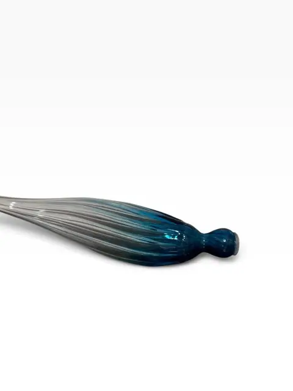
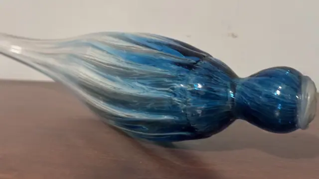
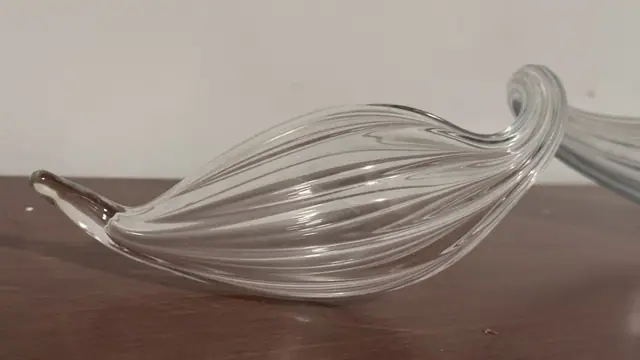
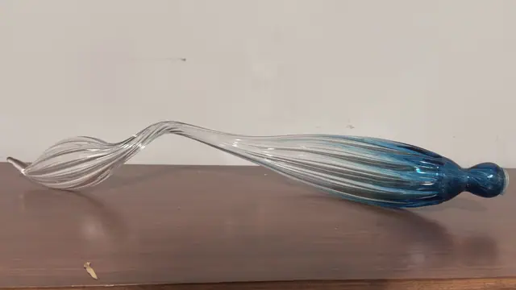
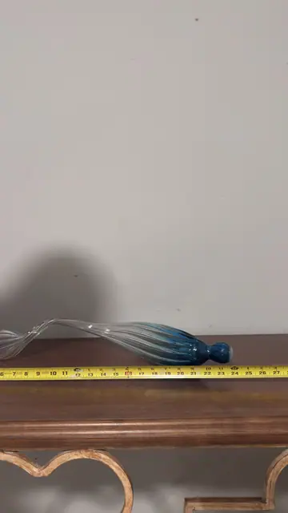
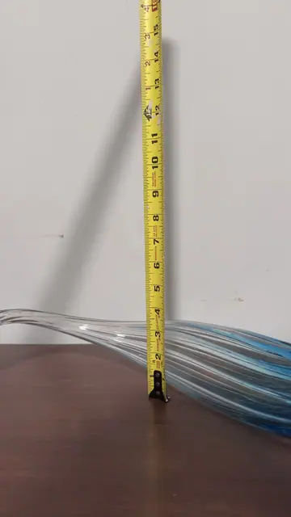
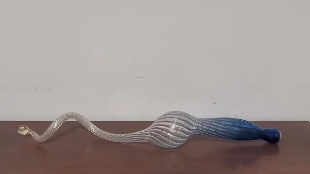
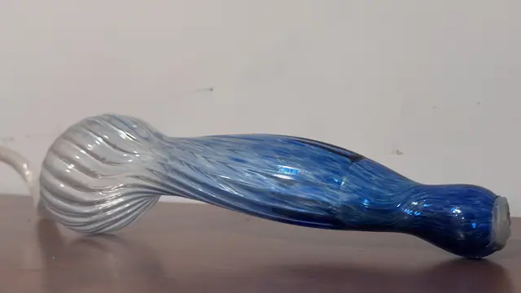
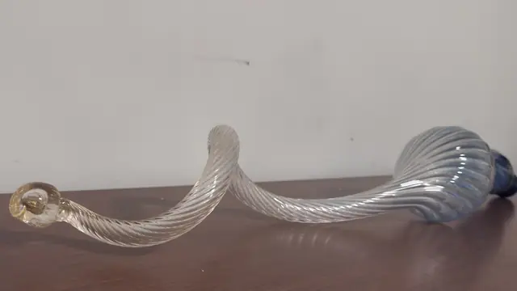
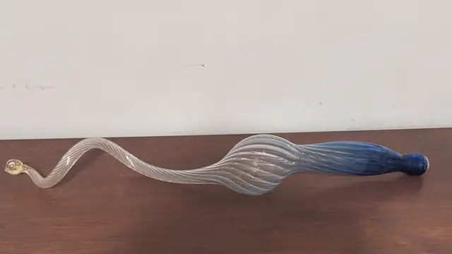
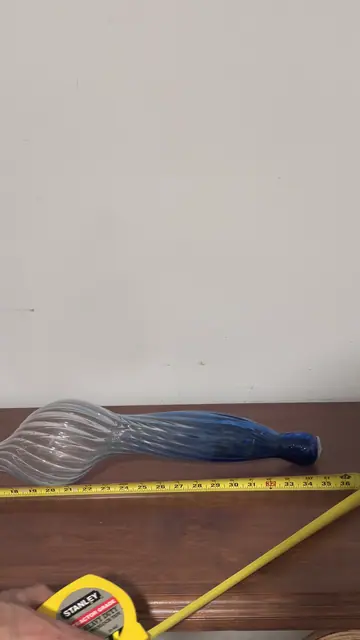
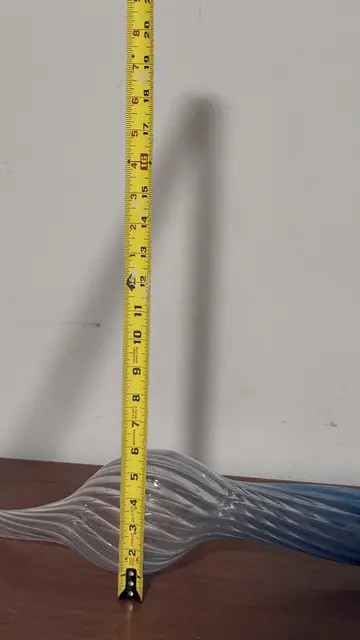
About the Item
A hand-blown Victorian Nailsea glass rolling pin in clear glass shading to cobalt blue, with a twisted ribbed body and knopped end. These decorative pins were blown in the Nailsea and Bristol glasshouses and often given as sailor's love tokens; one end retains the small filling hole used to warm the pin with water for pastry work. A beautiful, sculptural piece of 19th-century English glass. Dimensions: L approx. 18 in (46 cm); Dia approx. 5 in (13 cm) - from tape photos Form, pontil-type end and colourway match documented Nailsea glass rolling pins c.1860-1880. Unmarked, as is typical.
Details
- Creation Year:
- 19th century
- Medium:
- Hand-blown glass
- Period:
- 19Th
- Condition:
- Offered in the condition shown in the photographs.
- Reference Number:
- VO-388